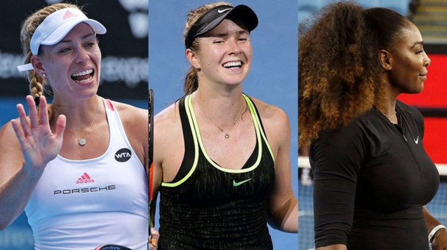

2017 AUSTRALIAN OPEN WOMEN'S PREVIEW: WILL KERBER REPEAT DOWN UNDER?

A couple of things are clear about the Australian Open women’s draw. Angelique Kerber and Serena Williams, all things being normal, are the favorites. But will all things be normal in Melbourne? Judging from how the world’s Top 2 players have opened the season, that isn’t clear at all. With Victoria Azarenka, Petra Kvitova and Madison Keys all absent, the WTA seems ready for a new major champion. Let’s take a look ahead and see who, if anyone, might be the woman to make it happen.
*****
FIRST QUARTER
For a world No. 1, Kerber looked strangely downbeat from the start of her second-round loss to Daria Kasatkina in Sydney last week. Was it a sign of uncertainty to come, or will she shake it off, the way she has shaken off all uncertainty at the majors over the last 12 months? We shall see, but it’s fair to say that Kerber will be vulnerable to an upset in the early going in Melbourne. This is the place where she won her first Slam, but it’s also the place where she had to save a match point to survive her opener.
Could Kerber find herself in the same position in her first-rounder against 61st-ranked Lesia Tsurenko? Probably not, but the Ukrainian did take her to three sets in their only meeting, two years ago in Sydney. This week Tsurenko won her first three matches in Hobart before having to withdraw in the semis with a viral illness; hopefully she’s ready to go by Monday. If Kerber wins that match, she could see Kasatkina again in the fourth round, and French Open champion Garbiñe Muguruza in the quarterfinals.
Potential second-round match to watch: Kasatkina vs. Eugenie Bouchard
Sleeper: Shuai Zhang. She came out of the qualifying to reach the quarters here in 2016.
Semifinalist: Kerber
*****
SECOND QUARTER
Simona Halep would seem to be in a comfortable position. She’s playing on hard courts, which she likes, but unlike other years when she came in as the No. 2 seed, she’s flying slightly under the radar at No. 4 this time. The key for Halep will be getting past the first round. Three times in the last five years, she’s gone out in her opener Down Under; the other two years she had respectable runs to the quarterfinals. Halep won’t have it easy to start this time; her opponent, hard-hitting American Shelby Rogers, is capable of pulling off an upset, especially against an underpowered opponent.
Also here: Svetlana Kuzetsova, Monica Puig, Elina Svitolina and Venus Williams. As with Halep, it’s been feast or famine in recent years for Venus in Melbourne; a quarterfinalist in 2015, she went out in the first round in 2016.
If Halep does lose early, this thin section should give someone a very good opportunity to reach her first Slam semi.
Player to watch: Shenzhen champ Katerina Siniakova
Semifinalist: Svitolina
*****
THIRD QUARTER
This section is strong at the top. Agnieszka Radwanska, world No. 3 and a semifinalist here last year, is the first seed; Karolina Pliskova, 2016 U.S. Open finalist and Brisbane champion last week, is right behind her. Their styles are diametrically opposed—Pliskova is about pace, Radwanska is about everything but—but each has Slam-winning potential, and has been to the final of one. Looking at the fairly thin array of talent between them in this quarter, each is a clear favorite to make it to the quarterfinals.
Is Pliskova ready to consolidate on her gains from the U.S. hard-court circuit last summer? The signs were good in Brisbane, where she won the title. Now she just needs someone else to take Radwanska out for her: Aga and Pliskova have played seven times, and Pliskova has yet to win a set.
First-round match to watch: Ana Konjuh vs. Kristina Mladenovic
Semifinalist: Radwanska
*****
FOURTH QUARTER
After all is said and done, the only thing that really matters, as far as this draw is concerned, is how Serena is playing. If she’s sharp, everything—and everyone—else is moot. But Serena looked anything but sharp in her first event, in Auckland, where she lost to 69th-ranked Madison Brengle. Serena will have to be much better than that if she’s going to survive even one round in Melbourne. She opens against Belinda Bencic, the talented but oft-injured Swiss who upset her in Toronto in 2015.
Looking beyond that matchup, this is a solid quarter. Dominika Cibulkova—a finalist here in 2014—is the second seed, and Johanna Konta, a semifinalist a year ago, is also here. With her win over Radwanska in the Sydney final this week, Konta comes in with as much momentum as anyone in the draw. But she does have a potentially difficult opener against Kirsten Flipkens.
Player of Interest: Naomi Osaka. The Japanese teen could play Konta in the second round.
First-round matches to watch: Williams vs. Bencic, Konta vs. Flipkens
Semifinalist: Cibulkova
*****
Semifinals: Kerber d. Svitolina; Radwanska d. Cibulkova